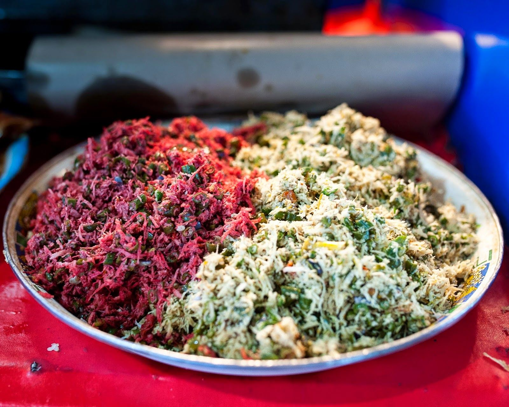

Resep Lawar Khas Bali

Bahan-bahan Yang Dibutuhkan :
- Bahan-bahan
- 100 gram kelapa parut (setengah tua)
- 150 gram daging ayam rebus, disuwir
- 100 garam kacang panjang, potong 2 cm, lalu rebus setengah matang
- 100 gram kecambah, rebus
- 2 sendok makan gula merah, disisir
- 2 sendok makan minyak untuk menumis
- 1 buah mentimun, potong dadu kecil
- 3 sendok makan bawang goreng
- 1 buah jeruk nipis
- 1 sendok teh garam
- Bumbu Halus
- 3 buah cabai merah, buang bijinya
- 10 buah cabai rawit (atau sesuai selera)
- 6 butir bawang merah
- 2 siung bawang putih
- 1/2 sendok teh lada
- 2 butir kemiri
- 1 cm jahe
- 1 cm lengkuas
- 2 cm kencur
- 1/2 sendok teh ketumbar
- 1/2 blok terasi
Cara Membuat :
- Tumis bumbu halus sampai harum.
- Masukkan garam, gula merah, dan tiga sendok makan air. Aduk rata.
- Masukkan daging ayam, kelapa parut, kacang panjang, dan kecambah.
- Matikan kompor, masukkan irisan mentimun. Aduk rata.
- Sebelum dihidangkan, tambahkan air perasan jeruk nipis dan taburan bawang goreng.
Untuk mengetahui cara membuatnya simak video berikut :
Copyright Anggita Putra